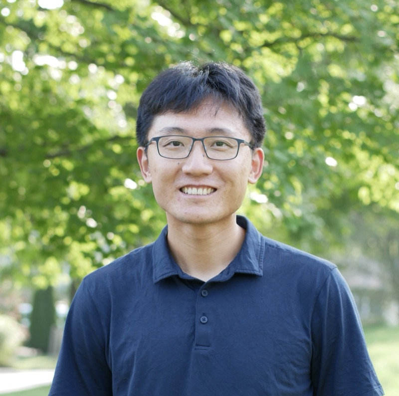

About NERC
NERC 2026 will be hosted in Commons at Princeton University on October 3, 2026. The program includes keynote talks from distinguished leaders, a Rising Stars oral presentation session, and vibrant poster sessions for students and researchers. Registration is open to the entire robotics community — see the registration details below.
Registration
NERC 2026 is open to researchers, students, and industry professionals. Registration is handled through Eventbrite.
| Registration Type | Rate |
|---|---|
| Student | $50 |
| Academic | $75 |
| Industry | $100 |
Tickets are refundable up to 7 days before the event. NERC 2026 is an in-person, full-day program (8:00 AM – 5:00 PM ET) at Princeton University.
Questions? Contact us at nerc2026@princeton.edu.
Call for Participation
Rising Stars & Oral Talks
We invite PhD students and postdocs to apply for our Rising Stars session. This
is a prestigious opportunity to orally present your research to the entire colloquium.
Applicants should submit an abstract (see format below), a video presentation
summarizing their work (up to 2 minutes), and a curriculum vitae. Selected researchers will be
invited to give a short spotlight talk during the colloquium.
Posters & Demos
Present your latest work during our interactive poster sessions. We welcome abstracts describing recently published work, preliminary results, ongoing research, and demonstrations. Accepted abstracts will be presented as posters.
Abstract Format and Submission
Abstracts for both tracks should be submitted in plain text (no PDF). Abstracts may be at most 5000 characters and should aim for 2–3 paragraphs. An abstract should describe the work, its significance, and what will be presented at the colloquium. If the work has been previously published, the abstract should say so and name the venue.
Submissions are handled through OpenReview. If you do not already have an OpenReview account, create one well before the deadline; new profiles can take time to be activated.
- Submission deadline (both tracks, all materials): Friday, August 21, 2026, 5:00 PM ET
- Early registration for travel funding consideration: Friday, August 21, 2026, 5:00 PM ET
- Rising Stars Decisions: Monday, September 7, 2026
- Poster Decisions: Monday, September 7, 2026
- Travel Funding Decisions: Monday, September 7, 2026
- Colloquium: Saturday, October 3, 2026
Key Dates
Please note the following important deadlines for submissions, travel grant applications, and notifications.
| Fri, Aug 21 | Rising Stars Submissions | Submit abstracts for oral presenter consideration via OpenReview by 5:00 PM ET. |
| Fri, Aug 21 | General Poster Abstracts | Submit abstracts for the poster session via OpenReview by 5:00 PM ET. |
| Fri, Aug 21 | Travel Funding Applications | Apply for student/postdoc travel grant support via Eventbrite by 5:00 PM ET (tied to abstract deadline). |
| Mon, Sep 7 | Rising Stars Decisions | Notification of acceptance for oral presentation slots emailed to applicants. |
| Mon, Sep 7 | Poster Decisions | Acceptance decisions for general poster session emailed to contributors. |
| Mon, Sep 7 | Travel Funding Decisions | Notification of travel grant awards and support coverage. |
| Sat, Oct 3 | Colloquium Day! | Join us at Princeton University (8:00 AM – 5:00 PM ET). |
Invited Speakers & Panelists
Our program aims to cover a diverse range of robotics specialties. We feature speakers from both academia and industry, with a special focus on recruiting distinguished voices from institutions across the Northeast and beyond.

To Be Announced
Our third keynote speaker will be announced soon.
Schedule
Tentative Schedule for Saturday, October 3, 2026. Details subject to change.
| Time | Event |
|---|---|
| 8:00 AM | Registration & Breakfast |
| 8:50 AM | Opening Remarks Featuring Princeton Robotics Lab videos |
| 9:00 AM | Rising Stars / Submitted Talks |
| 9:15 AM | Invited Speaker I 40 min talk + 5 min Q&A |
| 10:00 AM | Poster Session A, Commercials & Coffee Break (1.5 hr) |
| 11:30 AM | Rising Stars / Submitted Talks |
| 11:45 AM | Invited Speaker II 40 min talk + 5 min Q&A |
| 12:30 PM | Lunch & Lab Tours Featuring lab tour previews and demos |
| 1:30 PM | Rising Stars / Submitted Talks |
| 1:45 PM | Invited Speaker III 40 min talk + 5 min Q&A |
| 2:30 PM | Poster Session B, Commercials & Coffee Break (1.5 hr) |
| 4:00 PM | Rising Stars / Submitted Talks |
| 4:15 PM | Faculty & Industry Panel: Career Advice 40 min + 5 min Q&A |
| 5:00 PM | Closing Remarks & Awards Awards, Princeton Lab videos, and NERC 2027 announcement |
| 5:30 PM | Clean-up & Happy/Social Hour |
Travel & Logistics
Venue
Princeton University
Commons
11 Ivy Lane
Princeton, NJ 08540
The main events (keynotes, oral sessions, panels) will be held in Commons, part of Princeton's new engineering neighborhood on Ivy Lane, across from Princeton Stadium.
Getting Here
By Train: The "Dinky" train connects Princeton Station (on campus) to Princeton Junction (NJ Transit Northeast Corridor). Commons is about a 15-minute walk from Princeton Station.
By Plane: Newark Liberty International Airport (EWR) is approx. 1 hour away by car or train.
Accommodation
Here are several recommended hotel options near campus (note: there are no reserved room blocks for the event):
- Nassau Inn [~20-minute walk to Commons]
- Graduate Princeton [~20-minute walk to Commons]
- The Peacock Inn [~25-minute walk, or ~5-minute Uber/drive]
- Hyatt Regency Princeton [~5-10 minute Uber/drive, 2.5 miles]
- Residence Inn Princeton [~7-10 minute Uber/drive, 3.0 miles]
- Hyatt Place Princeton [~8-12 minute Uber/drive, 3.5 miles]
Travel Support
Limited student and postdoc travel support is available to help cover lodging and transportation costs.
Applications are open to students and postdocs from institutions across the Northeast who are participating or presenting at the colloquium.
The deadline to apply is August 21, 2026 (tied to the abstract deadline). Details and applications are managed through the Eventbrite registration page.
Committee
Princeton University
Princeton University
Princeton University
Princeton University
Princeton University
Princeton University
Princeton University
Princeton University
Contact us at: nerc2026@princeton.edu
Past NERCs
- 2025: Cornell University
- 2024: University of Massachusetts Amherst
- 2023: Yale University
- 2022: University of Massachusetts Lowell
- 2019: University of Pennsylvania
- 2018: Rutgers University
- 2017: Northeastern University
- 2016: Cornell University
- 2015: Worcester Polytechnic Institute (WPI)
- 2014: Brown University
- 2013: Harvard University
- 2012: Massachusetts Institute of Technology (MIT)